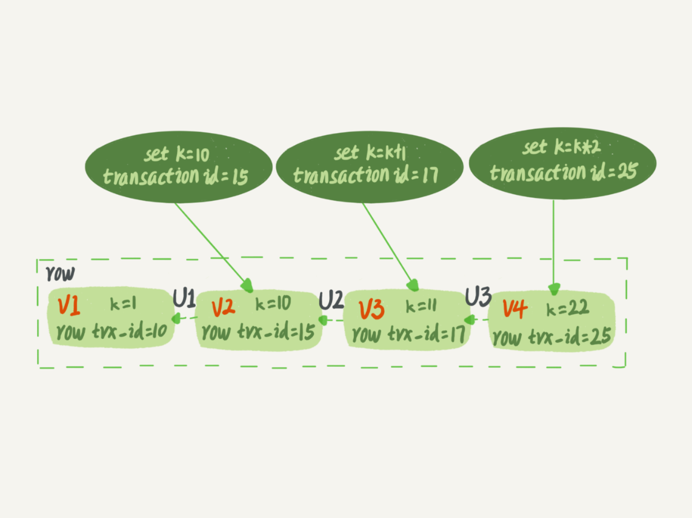

mysql
MySQL是目前应用最广泛的开源关系数据库。
简介
mysql逻辑架构图

查询语句执行流程
- 连接器
- 客户端跟服务端建立连接
1
2# 连接器负责跟客户端建立连接、获取权限、维持和管理连接。连接命令一般是这么写的：
mysql -h$ip -P$port -u$user -p - TCP 三次握手；
- 验证用户名和密码，权限固定在该连接上；
- 连接后状态
1
2
3
4
5
6
7
8
9# 没有后续动作处于空闲状态，即Command列显示sleep
show processlist;
# 太长没动静，根据参数wait_timeout时间断开链接，默认8小时
# 建立链接比较复杂，尽量使用长连接
# 因为执行过程中临时使用的内存是管理在连接对象里面的。所以长连接累积下来，可能导致内存占用太大。被系统强行杀掉（OOM），从现象看就是 MySQL 异常重启了。
# 定期断开长连接或者执行较大操作后通过执行mysql_reset_connection来重新初始化连接资源。
- 客户端跟服务端建立连接
- 查询缓存-key-value
- mysql拿到一个查询请求后，会先查询缓存看看，之前是不是执行过这条语句。之前执行过的语句及其结果可能会以 key-value 对的形式，被直接缓存在内存中。key 是查询的语句，value 是查询的结果。如果你的查询能够直接在这个缓存中找到 key，那么这个 value 就会被直接返回给客户端。
- 查询缓存的失效非常频繁，只要有对一个表的更新，这个表上所有的查询缓存都会被清空。对于更新压力大的数据库来说，查询缓存的命中率会非常低。
- 缓存“按需使用”的方式。将参数 query_cache_type 设置成 DEMAND，这样对于默认的 SQL 语句都不使用查询缓存。而对于你确定要使用查询缓存的语句，可以用 SQL_CACHE 显式指定，像下面这个语句一样： MySQL 8.0 版本直接将查询缓存的整块功能删掉了，也就是说 8.0 开始彻底没有这个功能了。
1
select sql_cache * from T where ID=2;
- 分析器-做什么
- SQL语句解析，输入的是由多个字符串和空格组成的一条 SQL 语句，MySQL 需要识别出里面的字符串分别是什么，代表什么。
- 词法分析。
- 语法分析。
- 预处理器
- 优化器-怎么做
- 在表里面有多个索引的时候，决定使用哪个索引；
- 在一个语句有多表关联（join）的时候，决定各个表的连接顺序。
- 执行器-具体执行
- 判断表T的执行查询的权限。（如果命中缓存，会在返回缓存结果时候做权限校验。查询也会在优化器之前调用precheck验证权限）。
- 调用 InnoDB 引擎接口取这个表的第一行，判断 ID 值是不是 10，如果不是则跳过，如果是则将这行存在结果集中；
- 调用引擎接口取“下一行”，重复相同的判断逻辑，直到取到这个表的最后一行。
- 执行器将上述遍历过程中所有满足条件的行组成的记录集作为结果集返回给客户端。
- 连接器
更新语句执行流程

日志系统
- redo log - 引擎层 InnoDB 引擎特有的物理日志
- 记录的是“在某个数据页上做了什么修改”，也是写日志到磁盘，顺序写很快，而更新数据到磁盘是随机的很慢。
- WAL 的全称是 Write-Ahead Logging。它的关键点就是先写日志，再写磁盘。具体来说，当有一条记录需要更新的时候，InnoDB 引擎就会先把记录写到 redo log（粉板）里面，并更新内存，这个时候更新就算完成了。同时，InnoDB 引擎会在适当的时候，将这个操作记录更新到磁盘里面。
- redo log 是循环写的，空间固定会用完。比如可以配置为一组4个文件，每个文件的大小是1GB，那么这块“粉板”总共就可以记录 4GB 的操作。从头开始写，写到末尾就又回到开头循环写。
- 有了 redo log，InnoDB就可以保证即使数据库发生异常重启，之前提交的记录都不会丢失，这个能力称为 crash-safe。
- binlog - server 层 归档逻辑日志
- redo log 是 InnoDB 引擎特有的；binlog 是 MySQL 的 Server 层实现的，所有引擎都可以使用。
- redo log 是物理日志，记录的是“在某个数据页上做了什么修改”；binlog 是逻辑日志，记录的是这个语句的原始逻辑，比如“给 ID=2 这一行的 c 字段加 1 ”。
- redo log 是循环写的，空间固定会用完；binlog 是可以追加写入的。“追加写”是指 binlog 文件写到一定大小后会切换到下一个，并不会覆盖以前的日志。
- 两阶段提交-两份日志之间的逻辑一致
- 如果不使用“两阶段提交”，那么数据库的状态就有可能和用它的日志恢复出来的库的状态不一致。
- 两阶段提交是跨系统维持数据逻辑一致性时常用的一个方案。有点类似TCP三次握手。
1. 执行器 -> InnoDB 引擎 （redo log prepare）
2. InnoDB 引擎 -> 执行器
3. 执行器 -> InnoDB 引擎（commit 事务）
事务
- 事务作用
事务就是要保证一组数据库操作，要么全部成功，要么全部失败。 - 实现
引擎层实现，MySQL 原生的 MyISAM 引擎就不支持事务，这也是 MyISAM 被 InnoDB 取代的重要原因之一。 - ACID
Atomicity、Consistency、Isolation、Durability，即原子性、一致性、隔离性、持久性。 - 同时执行问题
当数据库上有多个事务同时执行的时候，就可能出现脏读（dirty read）、不可重复读（non-repeatable read）、幻读（phantom read）的问题。 - 隔离级别（实现上通过视图、直接返回、锁方式）
- 读未提交(READ-UNCOMMITTED)-内存已经更新，直接返回记录上最新值，即内存中最新值
一个事务还没提交时，它做的变更就能被别的事务看到。 - 读提交(READ-COMMITTED)-sql语句开始执行时创建视图
一个事务提交之后，它做的变更才会被其他事务看到。 - 可重复读(REPEATABLE-READ)-事务启动时创建视图
一个事务执行过程中看到的数据，总是跟这个事务在启动时看到的数据是一致的。当然在可重复读隔离级别下，未提交变更对其他事务也是不可见的。 - 串行化(SERIALIZABLE)-加锁
对于同一行记录，“写”会加“写锁”，“读”会加“读锁”。当出现读写锁冲突的时候，后访问的事务必须等前一个事务执行完成，才能继续执行。
- 读未提交(READ-UNCOMMITTED)-内存已经更新，直接返回记录上最新值，即内存中最新值
- 事务隔离实现
- undo log
实际上每条记录在更新的时候会记录变更日志到redo log, 同时记录回滚操作到undo log。记录上的最新值，通过回滚操作，都可以得到前一个状态的值。 - 尽量不用长事务
长事务意味着系统里面会存在很老的事务视图。由于这些事务随时可能访问数据库里面的任何数据，所以这个事务提交之前，数据库里面它可能用到的回滚记录都必须保留，这就会导致大量占用存储空间。
- undo log
- 事务启动方式
- 显示
显式启动事务语句， begin 或 start transaction。配套的提交语句是 commit，回滚语句是 rollback。 - 隐示
set autocommit=0，这个命令会将这个线程的自动提交关掉。意味着如果你只执行一个 select 语句，这个事务就启动了，而且并不会自动提交。这个事务持续存在直到你主动执行 commit 或 rollback 语句，或者断开连接。 - 因此，我会建议你总是使用 set autocommit=1, 通过显式语句的方式来启动事务。
- 用于查找持续时间超过 60s 的事务。
1
select * from information_schema.innodb_trx where TIME_TO_SEC(timediff(now(),trx_started))>60
- 显示
索引
- 索引的常见模型
哈希表、有序数组和搜索树 - InnoDB 的索引模型
InnoDB索引组织结构

表都是根据主键顺序以索引的形式存放的，每一个索引在 InnoDB 里面对应一棵 B+ 树。
主键索引（又称聚簇索引）的叶子节点存的是整行数据。非主键索引（又称二级索引）的叶子节点内容是主键的值。
非主键索引搜索时，先搜索非主键索引对应的 B+ 树，再将索引值即主键值拿去搜索主键索引对应的 B+ 树。这个过程称为回表。
- 索引维护
- 页分裂-自增主键防止叶子节点分裂，追加操作，当前叶子节点满的话，从索引节点分裂新增叶子节点。
插入当前索引顺序之前的数据时，数据页满的情况下需要申请新数据页，再移动数据 - 页合并-逻辑删除并非物理删除防止页合并
删除数据时，利用率低，会将数据页合并。 - 自增主键 v.s. 业务主键
- 保证有序插入，不会分裂叶子节点，不需要挪动数据。
- 有业务逻辑的字段做主键，则往往不容易保证有序插入，这样写数据成本相对较高。
- 页分裂-自增主键防止叶子节点分裂，追加操作，当前叶子节点满的话，从索引节点分裂新增叶子节点。
- 索引选择
- B+ 树能够很好地配合磁盘的读写特性，减少单次查询的磁盘访问次数。
- 为什么需要自增主键？ innodb存储引擎的索引实现方式是B+树，B+树存储数据的特点是从左到右是有序的，在插入数据时，如果不是有序插入，会导致B+树的叶子节点分裂，存在移动数据的情况，影响插入数据性能，自增主键可以做到有序插入；
- innodb引擎中的索引模型是，每个索引都会形成一个索引树，普通索引树的叶子节点存储的是主键值，如果把主键设置为整形的自增主键 可以减少索引的存储空间占用；
- 什么时候需要自定义主键？只有一个索引，而且改索引是唯一索引时，不用考虑其他索引的叶子节点大小的问题。
- 覆盖索引
- 如果执行的语句是 select ID from T where k between 3 and 5，这时只需要查 ID 的值，而 ID 的值已经在 k 索引树上了，因此可以直接提供查询结果，不需要回表。也就是说，在这个查询里面，索引 k 已经“覆盖了”我们的查询需求，我们称为覆盖索引。
- 由于覆盖索引可以减少树的搜索次数，显著提升查询性能，所以使用覆盖索引是一个常用的性能优化手段。
- 前缀索引
- B+ 树这种索引结构，可以利用索引的“最左前缀”，来定位记录。
- 索引项是按照索引定义里面出现的字段顺序排序的。
- 这个最左前缀可以是联合索引的最左 N 个字段，也可以是字符串索引的最左 M 个字符。
- 如果既有联合查询，又有基于 a、b 各自的查询呢？查询条件里面只有 b 的语句，是无法使用 (a,b) 这个联合索引的，这时候你不得不维护另外一个索引，也就是说你需要同时维护 (a,b)、(b) 这两个索引，或者 (b, a)、(a) 这两个索引。至于那个单独建，考虑空间最小原则。
- 索引下推
联合索引在索引内部就判断了多个索引是否均满足条件，而不是只判断联合索引中的第一个索引，这样能前置过滤不满足的记录，减少回表次数。 - 重建索引和重建主键索引
- 重建索引-合理，省空间
1
2
3alter table T drop index k;
alter table T add index(k);
-- 索引可能因为删除，或者页分裂等原因，导致数据页有空洞。重建索引的过程会创建一个新的索引，把数据按顺序插入，这样页面的利用率最高，也就是索引更紧凑、更省空间。 - 重建主键索引
1
2
3
4alter table T drop primary key;
alter table T add primary key(id);
-- 过程不合理，不论是删除主键还是创建主键，都会将整个表重建。所以连着执行这两个语句的话，第一个语句就白做了。
-- 可以用这个语句代替 ： alter table T engine=InnoDB。
- 重建索引-合理，省空间
全局锁和表锁
- 锁的设计原因
数据库锁设计的初衷是处理并发问题。作为多用户共享的资源，当出现并发访问的时候，数据库需要合理地控制资源的访问规则。而锁就是用来实现这些访问规则的重要数据结构。 - 锁分类
- 全局锁
- 加锁TRWRL，使整个库处于只读状态
1
2flush tables with read lock;
-- 其他线程的以下语句会被阻塞：数据更新语句（数据的增删改）、数据定义语句（包括建表、修改表结构等）和更新类事务的提交语句 - 场景
全库逻辑备份。也就是把整库每个表都 select 出来存成文本。 - 不加锁备份问题
不加锁的话，备份系统备份的得到的库（里面所有表）不是一个逻辑时间点，这个视图是逻辑不一致的。 - 通过视图来实现不加锁备份
mysqldump 使用参数–single-transaction 的时候，导数据之前就会启动一个事务，来确保拿到一致性视图。而由于 MVCC(多版本并发控制) 的支持，这个过程中数据是可以正常更新的。
只适用于所有的表适用事务引擎的库。 - 为什么不用
set global readonly=true- 在有些系统中，readonly 的值会被用来做其他逻辑，比如用来判断一个库是主库还是备库。因此，修改 global 变量的方式影响面更大，
- ，在异常处理机制上有差异。如果执行 FTWRL 命令之后由于客户端发生异常断开，那么 MySQL 会自动释放这个全局锁，整个库回到可以正常更新的状态。而将整个库设置为 readonly 之后，如果客户端发生异常，则数据库就会一直保持 readonly 状态，这样会导致整个库长时间处于不可写状态，风险较高。
- 加锁TRWRL，使整个库处于只读状态
- 表级锁
- 表级别的锁有两种：一种是表锁，一种是元数据锁（meta data lock，MDL)。
- 加锁、解锁
lock tables … read/write。与 FTWRL 类似，可以用 unlock tables 主动释放锁，也可以在客户端断开的时候自动释放。需要注意，lock tables 语法除了会限制别的线程的读写外，也限定了本线程接下来的操作对象。1
2
3
4lock tables t1 read, t2 write;
unlock tables t1, t2;
-- t1 读锁（共享锁），所有线程（包括自身）只能读不能写。
-- t2 写锁（排它锁），其他线程读写都不行，自身线程可读写。 - InnoDB支持行锁，一般不用表锁，影响太大。
- 在 MySQL 5.5 版本中引入了 MDL，当对一个表做增删改查操作的时候，加 MDL 读锁；当要对表做结构变更操作的时候，加 MDL 写锁。
- DDL操作注意
- MDL读锁不互斥，读写锁、写锁互斥。MDL 会直到事务提交才释放。
- 不能有长事务，在 MySQL 的 information_schema 库的 innodb_trx 表中，你可以查到当前执行中的事务。如果你要做 DDL 变更的表刚好有长事务在执行，要考虑先暂停 DDL，或者 kill 掉这个长事务。
- 表请求频繁化，需要再DDL变更语句加上等待拿到MDL写锁时间，如果没有该等待时间，则会一直等待前面的线程读写完成，同时也阻塞后来的线程申请读写锁，导致大量正常读写请求堵塞。设定等待时间，如果在这个指定的等待时间里面能够拿到 MDL 写锁最好，拿不到也不要阻塞后面的业务语句，先放弃。
1
2ALTER TABLE tbl_name NOWAIT add column ...
ALTER TABLE tbl_name WAIT N add column ...
- 行锁
- 由各个引擎自己实现，MyISAM引擎没有行锁，InnoDB有行锁。
- 在 InnoDB 事务中，行锁是在需要的时候才加上的，但并不是不需要了就立刻释放，而是要等到事务结束时才释放。这个就是两阶段锁协议。
- 如果你的事务中需要锁多个行，要把最可能造成锁冲突、最可能影响并发度的锁尽量往后放。这就最大程度地减少了事务之间的锁等待，提升了并发度。
- 死锁
- 事务 A 和事务 B 在互相等待对方的资源释放，就是进入了死锁状态。
- 一种策略是，直接进入等待，直到超时。这个超时时间可以通过参数 innodb_lock_wait_timeout 来设置。默认50s。
- 另一种策略是，发起死锁检测，发现死锁后，主动回滚死锁链条中的某一个事务，让其他事务得以继续执行。将参数 innodb_deadlock_detect 设置为 on，表示开启这个逻辑。
- 减少死锁的主要方向，就是控制访问相同资源的并发事务量。
- 全局锁
事务到底是隔离还是不隔离
- 事务ID
InnoDB 里面每个事务有一个唯一的事务 ID，叫作 transaction id。它是在事务开始的时候向 InnoDB 的事务系统申请的，是按申请顺序严格递增的。 - 行记录
数据表中的一行记录，其实可能有多个版本 (row)，每个版本有自己的 row trx_id(行的事务ID）。 - 行状态变更图 
- 就是一个记录被多个事务连续更新后的状态。
- 三个虚线箭头，就是 undo log；而 V1、V2、V3 并不是物理上真实存在的，而是每次需要的时候根据当前版本和 undo log 计算出来的。比如，需要 V2 的时候，就是通过 V4 依次执行 U3、U2 算出来。
- 因此，一个事务只需要在启动的时候声明说，“以我启动的时刻为准，如果一个数据版本是在我启动之前生成的，就认；如果是我启动以后才生成的，我就不认，我必须要找到它的上一个版本”。
- 在实现上， InnoDB 为每个事务构造了一个数组，用来保存这个事务启动瞬间，当前正在“活跃”的所有事务 ID。“活跃”指的就是，启动了但还没提交。
- 数组里面事务 ID 的最小值记为低水位，当前系统里面已经创建过的事务 ID 的最大值加 1 记为高水位。
- 这个视图数组和高水位，就组成了当前事务的一致性视图（read-view）。
- 而数据版本的可见性规则，就是基于数据的 row trx_id 和这个一致性视图的对比结果得到的。
- 这个视图数组把所有的 row trx_id 分成了几种不同的情况。

- 如果落在绿色部分，表示这个版本是已提交的事务或者是当前事务自己生成的，这个数据是可见的；
- 如果落在红色部分，表示这个版本是由将来启动的事务生成的，是肯定不可见的；
- 如果落在黄色部分，那就包括两种情况
a. 若 row trx_id 在数组中，表示这个版本是由还没提交的事务生成的，不可见；
b. 若 row trx_id 不在数组中，表示这个版本是已经提交了的事务生成的，可见。
- InnoDB 利用了“所有数据都有多个版本”的这个特性，实现了“秒级创建快照”的能力。
- 更新数据都是先读后写的，而这个读，只能读当前的值，称为“当前读”（current read）。如果当前的记录的行锁被其他事务占用的话，就需要进入锁等待。
- InnoDB 的行数据有多个版本，每个数据版本有自己的 row trx_id，每个事务或者语句有自己的一致性视图。普通查询语句是一致性读，一致性读会根据 row trx_id 和一致性视图确定数据版本的可见性。
- 对于可重复读，查询只承认在事务启动前就已经提交完成的数据；
- 对于读提交，查询只承认在语句启动前就已经提交完成的数据；
安装
- centos7 安装MySQL
1
2
3
4
5
6
7
8
9
10
11
12
13
14
15
16
17
18
19
20
21
22
23
24
25
26
27
28
29
30
31
32
33
34
35
36
37
38
39
40
41
42
43
44
45
46
47
48
49
50
51
52
53
54
55
56
57
58
59
60
61
62
63
64
65
66
67
68
69<!-- 检查mariadb -->
rpm -qa|grep mariadb
<!-- 如有则按如下删除 -->
rpm -e --nodeps mariadb-server
rpm -e --nodeps mariadb
rpm -e --nodeps mariadb-libs
<!-- 检查mysql -->
rpm -qa|grep mysql
<!-- 存在则按如下删除 -->
rpm -e --nodeps 【xxx】
<!-- mysql yum源下载官网地址 -->
https://dev.mysql.com/downloads/repo/yum/
<!-- 根据自己系统版本选择 -->
cat /etc/redhat-release
<!-- centos7 选择如下 -->
wget https://dev.mysql.com/get/mysql80-community-release-el7-7.noarch.rpm
<!-- 安装mysql源 -->
rpm -Uvh mysql80-community-release-el7-7.noarch.rpm
<!-- 检查是否安装成功，是否有mysql-community.repo及 mysql-community-source.repo -->
ll /etc/yum.repos.d/
<!-- 查看源中的mysql版本 -->
yum repolist all | grep mysql
<!-- 切换mysql版本 -->
yum-config-manager --disable mysql80-community
yum-config-manager --enable mysql57-community
<!-- 检查当前启用的mysql仓库 -->
yum repolist enabled | grep mysql
<!-- 安装mysql -->
sudo yum -y install mysql-community-server
<!-- 会安装如下 -->
mysql-community-server
mysql-community-client
mysql-community-common
mysql-community-libs
numactl-libs
<!-- 启动mysql -->
sydo systemctl start mysqld.service
<!-- 查看状态 -->
sudo systemctl status mysqld.service
<!-- 停止mysql -->
sudo systemctl stop mysqld.service
<!-- 重启mysql -->
sudo systemctl restart mysqld.service
<!-- 初始密码，MySQL第一次启动后会创建超级管理员账号root@localhost，初始密码存储在日志文件中 -->
sudo grep 'temporary password' /var/log/mysqld.log
<!-- 修改密码 -->
ALTER USER 'root'@'localhost' IDENTIFIED BY 'jesonlin';
<!-- 关闭验证密码复杂度策略 -->
vim /etc/my.cnf
<!-- 添加如下并重启 -->
validate_password=OFF
<!-- 运行远程访问 -->
GRANT ALL PRIVILEGES ON *.* TO 'root'@'%' IDENTIFIED BY 'jesonlin' WITH GRANT OPTION;
<!-- 查看并修改字符集 -->
vim /etc/my.cnf
[mysqld]
character-set-client-handshake=FALSE
character_set_server=utf8mb4
collation-server=utf8mb4_unicode_ci
init-connect='SET NAMES utf8mb4'
[client]
default-character-set=utf8mb4
[mysql]
default-character-set=utf8mb4
<!-- 重启并检查设置效果 -->
SHOW VARIABLES WHERE Variable_name LIKE 'character_set_%' OR Variable_name LIKE 'collation%';
<!-- 设置开机启动 -->
systemctl enable mysqld
systemctl daemon-reload - centos8安装mysql
1
2
3
4
5
6
7
8
9
10
11
12
13
14
15
16
17
18
19
20
21
22
23
24
25<!-- 前面下载yum源步骤同上，官方源里只有mysql8版本，需要手动修改源 -->
<!-- 修改mysql-community.repo -->
vim /etc/yum.repos.d/mysql-community.repo
<!-- 添加如下 -->
[mysql57-community]
name=MySQL 5.7 Community Server
baseurl=http://repo.mysql.com/yum/mysql-5.7-community/el/7/$basearch/
enabled=1
gpgcheck=0
gpgkey=file:///etc/pki/rpm-gpg/RPM-GPG-KEY-mysql
<!-- 禁止mysql8 -->
yum-config-manager --disable mysql80-community
<!-- 核对输出 -->
yum repolist enabled | grep mysql
<!-- 失能模块 -->
yum module disable mysql
<!-- 安装 -->
yum install mysql-community-server
<!-- 启动mysql -->
systemctl start mysqld.service
<!-- 其他步骤同上 -->
<!-- 修改密码有报错执行下面 -->
flush privileges;
<!-- 重启失败，发现不能添加如下语句 -->
validate_password=OFF - docker 安装启动mysql5.7
1
2
3docker pull mysql:5.7
docker run -p 3307:3306 --name mysql -v /data/service/docker/mysql/logs:/var/log/mysql -v /data/service/docker/mysql/data:/var/lib/mysql -e MYSQL_ROOT_PASSWORD=jesonlin -d mysql:5.7 - 跳过密码登录数据库
1
2
3
4
5
6
7
8<!-- 设置MYSQLD_OPTS -->
systemctl set-environment MYSQLD_OPTS="--skip-grant-tables";
<!-- 显示mysql环境变量 -->
systemctl show-environment
<!-- 撤销mysql环境变量 -->
systemctl unset-environment MYSQLD_OPTS;
<!-- 重启，脚本里有用到该参数 -->
systemctl restart mysqld.service
权限
- 创建用户
1
CREATE USER '[用户名]'@'%' IDENTIFIED BY '[密码]';
- 授予权限 drop user [用户名]@’%’;
1
2
3GRANT ALL PRIVILEGES ON `[DB]`.* TO '[用户名]'@'[host]';
```
3. 删除用户revoke all on [DB].* from ‘[用户名]‘@’[host]’;1
4. 删除权限
Delete from mysql.user where user = ‘[用户名]’ and host = ‘[host]’;mysqladmin -uroot -p[旧密码] password [新密码]1
5. 改密码
set password for [用户名]@[host] = password([新密码]);
update mysql.user set authentication_string=password(‘新密码’) where user=’用户名’ and Host =’localhost’;
flush privileges;systemctl start/restart/stop mysqld.service systemctl status mysqld.service1
2
3
## 库表操作
0. 启动、重启、停止create database [DB] if not exists [DB] default charset utf8mb4 collate utf8mb4_unicode_ci;1
1. 创建数据库
CREATE TABLE1
2. 创建数据表
[表名](
idint(11) NOT NULL AUTO_INCREMENT COMMENT ‘自增ID’,
namevarchar(32) NOT NULL COMMENT ‘名称’,
commentvarchar(255) NOT NULL COMMENT ‘备注’,
create_timedatetime DEFAULT CURRENT_TIMESTAMP COMMENT ‘创建时间’,
update_timedatetime DEFAULT CURRENT_TIMESTAMP ON UPDATE CURRENT_TIMESTAMP COMMENT ‘更新时间’,
PRIMARY KEY (id),
KEYidx_name(name),
) ENGINE=InnoDB AUTO_INCREMENT=0 DEFAULT CHARSET=utf8mb4 COMMENT = ‘业务信息’;insert into [表名] (id, name, comment) values (null, ‘’, ‘’);1
3. 插入数据
create table [新表名] like [旧表名]1
4. 拷贝表结构
insert into [新表名] select * from [旧表名]1
5. 拷贝数据
mysqldump -h[IP] –set-gtid-purged=off -uroot -p[PASSWORD] –databases [DB] > [DB].sql1
6. 导入导出数据库
mysql -h[IP] -uroot -p[PASSWORD] < [DB].sqlselect (sum(DATA_LENGTH)+sum(INDEX_LENGTH))/1024/1024/1024 from information_schema.TABLES where TABLE_SCHEMA=’[DB]’;1
7. 数据库大小
SELECT TABLE_NAME, DATA_LENGTH/1024/1024/1024, INDEX_LENGTH/1024/1024/1024 FROM information_schema.TABLES WHERE TABLE_SCHEMA=’[DB]’;1
8. 数据库每个表大小
SELECT count(TABLE_NAME) FROM information_schema.TABLES WHERE TABLE_SCHEMA=’[DB]’;1
9. 数据表大小
select * from information_schema.tables where information_schema.tables.TABLE_SCHEMA=’[DB]’ and information_schema.tables.TABLE_NAME=’[TB]’\G;1
10. 查询表创建和更新时间
alter table [TB] add [FIELD] int(11) unsigned default 0 comment “id”;1
11. 添加表字段
mysql –host=[HOST] –user=[USER] –password=[PASSWORD] -se “SELECT * FROM [DB].[TB]” | sed ‘s/\t/“,”/g;s/^/“/;s/$/“/;s/\n//g’ > app.csv1
12. 到出到本地csv
alter table [TB] modify 字段名 varchar(20);1
2
3
4
## 字段操作
1. 修改表字段类型：alter table [TB] add column age int(3);1
2. 增加表字段：
alter table [TB] add column age int(3) after [旧字段名];1
3. 增加表字段时控制顺序（或者使用first）：
alter table [TB] drop [字段名];1
4. 删除表字段：
alter table [TB] change [字段原名] [字段新名] [字段类型];1
5. 修改表字段名：
alter table 表 add idnex(字段);1
2
3
4
## 索引
1. 普通索引alter table 表 add unique(字段);1
2. 唯一索引
alter table 表 add fulltext(字段);1
3. 全文索引
alter table 表 add primary key(字段);1
4. 主键索引
1
2
3
4
5
6
## 查看任务及其状态
1. 查看任务及其状态
```sql
show full processlist; - 过滤掉Sleep链接
1
pager grep -v Sleep
- 结束单个任务
1
2
3
4
5kill Id
```sql
4. 批量结束任务
```sql
select concat('kill ',id,';') from information_schema.processlist where info like '%INSERT INTO `log`%'; - 查看和修改最大连接
1
2show variables like '%max_connections%';
set GLOBAL max_connections = 2000;
常用语句
- 配置变量查看和修改
1
2show variables like '%max_allowed_packet%';
set global max_allowed_packet=1073741824; - 查看和修改引擎
1
2ALTER TABLE table_name ENGINE=InnoDB;
select CONCAT('alter table ', table_schema, '.', table_name,' engine=InnoDB;') FROM information_schema.tables WHERE table_schema="interface_manage" AND ENGINE="MyISAM"; - 统计每天任务量
1
select count(*),DATE_FORMAT(FROM_UNIXTIME(time), '%Y-%m-%d') AS t from [TB] WHERE DATE_FORMAT(FROM_UNIXTIME(time), '%Y') = '2020' GROUP BY t
- 批量删除符合某些字符串的数据表
1
2
3<!-- 以下拼接结果有长度限制，可重复多次得到结果 -->
SELECT CONCAT( 'DROP TABLE ', GROUP_CONCAT(table_name) , ';' ) AS statement FROM information_schema.tables WHERE table_schema = [DB] AND table_name LIKE '[TB]%';
<!-- 将拼接得到的结果执行删除 -->
面试
- 执行一条SQL查询语句，期间发生什么？
- 连接器-管理链接，验证权限
- 查询缓存-key是sql语句，value是查询结果，命中返回，mysql8.0取消
- 解析SQL-分析器-
- 词法分析
- 语法分析
- 执行SQL
- 预处理-字段、表存在检查、*扩展等
- 优化器-执行计划生成，索引选择
- 索引分类：主键索引（聚簇索引）、二级索引（非聚簇索引）
- 单纯查B+树的话，查询主键索引的 B+ 树的成本会比查询二级索引的 B+ 的成本大
- 覆盖索引，直接在二级索引就能查找到结果，不需要回表。
- 执行器-操作引擎，返回结果
- 主键索引查询
- 全表扫描
- 索引下推
- 联合索引当遇到范围查询 (>、<) 就会停止匹配。
- 即二级索引在查询时的不进行回表操作，就能提高查询的效率，因为它将 Server 层部分负责的事情，交给存储引擎层去处理了。
- 二级索引在定位到后，先不执行回表操作，而是判断索引中包含的列是否满足另外条件，满足才回表再返回结果给server层。
- 将其他条件中的联合索引部分条件在引擎层判断，减少回表后在server层判断的次数。
- MySQL 一行记录的存储结构
- 表空间
- 段（segment）：一般分为数据段、索引段和回滚段等。
- 区（extent）：在表中数据量大的时候，为某个索引分配空间的时候就不再按照页为单位分配了，而是按照区（extent）为单位分配。每个区的大小为 1MB，对于 16KB 的页来说，连续的 64 个页会被划为一个区，这样就使得链表中相邻的页的物理位置也相邻，就能使用顺序 I/O 了。
- 页（page）：InnoDB 的数据是按「页」为单位来读写的，默认每个页的大小为 16KB。
- 行（row）：数据库表中的记录都是按行（row）进行存放的。
- InnoDB 行格式-Compact

- 变长字段长度列表
a. 记录字段实际存储的数据字节长度（一个字母是一个字符占一个字节，一个中文是一个字符占据3个字节）。而varchar(n)是表示字符大小。
b. 逆序存放，主要是因为「记录头信息」中指向下一个记录的指针，指向的是下一条记录的「记录头信息」和「真实数据」之间的位置，这样的好处是向左读就是记录头信息，向右读就是真实数据，比较方便。
c. 只出现在数据表有变长字段的时候。 - NULL值列表
a. 存在允许 NULL 值的列，则每个列对应一个二进制位（bit）。
b. 必须用整数个字节的位表示（1字节8位）。 - 记录头信息
a. delete_mask: 删除标记位。
b. next_record: 下一条记录位置。
c. record_type: 记录类型，0普通记录，1表示B+树非叶子节点记录。 - 记录的真实数据
- 隐藏字段：
a. row_id: 引擎为无主键或唯一约束添加的隐藏自增id，6个字节。
b. trx_id: 事务id,6个字节。
c. roll_pointer: 记录上个版本的指针，7个字节。
- 隐藏字段：
- 变长字段长度列表
- varchar(n)中n最大值是多少
- MySQL 规定除了 TEXT、BLOBs 这种大对象类型之外，其他所有的列（不包括隐藏列和记录头信息）占用的字节长度加起来不能超过 65535 个字节。也就是说，一行记录除了 TEXT、BLOBs 类型的列，限制最大为 65535 字节，注意是一行的总长度，不是一列。
- varchar(n) 字段类型的 n 代表的是最多存储的字符数量，并不是字节大小哦。
- 因为字符集代表着，1个字符要占用多少字节，比如 ascii 字符集， 1 个字符占用 1 字节，那么 varchar(100) 意味着最大能允许存储 100 字节的数据。
- 那假设数据库表只有一个 varchar(n) 类型的列且字符集是 ascii，在这种情况下， varchar(n) 中 n 最大取值是 65535 吗？不是的，还要减去变长字段长度列表和null值列表所占用的空间
- 在数据库表只有一个 varchar(n) 字段且字符集是 ascii 的情况下，varchar(n) 中 n 最大值为
1
2
3
4
5
6
7
8
9
10-- 1个字段，ascii编码
= 65535
- 2(1个变长字段长度记录<=255用1个字节，>255用2个字节最多表示65535)
- 1(1个NULL字段用1位表示，1个字节最小单位所以是1个字节)
= 65532。
-- 1个字段，UTF-8编码
65532/3=21844
create table test(`name` varchar(65532) NULL) ENGINE = InnoDB DEFAULT CHARACTER SET = ascii ROW_FORMAT = COMPACT;
- 行溢出处理
- MySQL 中磁盘和内存交互的基本单位是页，一个页的大小一般是 16KB（16384字节）；
- 而一个 varchar(n) 类型的列最多可以存储 65532字节，一些大对象如 TEXT、BLOB 可能存储更多的数据；
- 一个页可能就存不了一条记录。这个时候就会发生行溢出，多的数据就会存到另外的「溢出页」中。
- 当发生行溢出时，在记录的真实数据处只会保存该列的一部分数据，而把剩余的数据放在「溢出页」中，然后真实数据处用 20 字节存储指向溢出页的地址，从而可以找到剩余数据所在的页。
- Compressed 和 Dynamic 采用完全的行溢出方式，记录的真实数据处不会存储该列的一部分数据。都存储在溢出页。
- 表空间
- 自增id
- 创建
1
2
3
4
5create table t(id int unsigned auto_increment primary key) auto_increment=4294967295;
-- int unsigned 是4个字节2^32-1
-- bigint unsigned 是8个字节2^64-1
-- 建表没有自增ID，InnoDB 会创建一个不可见的，长度为6个字节的.row_id。
-- 这种情况下自增ID满了，是会重新0开始，覆盖旧的。 - 自增id满了以后
再申请下一个id时，得到的值保持不变，此时插入失败，报主键冲突。 - 主动在 InnoDB 表中主动创建自增主键
因为，表自增 id 到达上限后，再插入数据时报主键冲突错误，是更能被接受的。
毕竟覆盖数据，就意味着数据丢失，影响的是数据可靠性；报主键冲突，是插入失败，影响的是可用性。而一般情况下，可靠性优先于可用性。
- 创建
- 索引
索引的定义
帮助存储引擎快速获取数据的一种数据结构，形象的说就是索引是数据的目录。索引分类
- 数据结构：B+tree索引、hash索引、Full-text索引
- 物理存储：聚簇索引（主键索引）、非聚簇索引（二级索引、辅助索引）
- 字段特性：主键索引、唯一索引、普通索引、前缀索引
- 字段个数：单列索引、联合索引
InnoDB存储引擎索引选择
- 默认使用主键作为聚簇索引的索引建；
- 没有主键使用第一个不包含NULL值得唯一列作为聚簇索引的索引键；
- 都没有情况下，默认生成隐式自助id列作为聚簇索引的索引建；
B+tree索引
- B+tree索引结构（图中叶子节点需改为双向列表）

- 多叉树，叶子节点才存放数据，非叶子节点只存放索引，每个节点里的数据是按主键顺序存放的。
- 叶子节点中包括了所有的索引值信息，有两个指针，分别指向下一个叶子节点和上一个叶子节点，双向链表。
- 主键索引的 B+Tree 的叶子节点存放的是实际数据，二级索引的 B+Tree 的叶子节点存放的是主键值。
- 在二级索引的 B+Tree 就能查询到结果的过程就叫作「覆盖索引」，也就是只需要查一个 B+Tree 就能找到数据。
- B+tree索引结构（图中叶子节点需改为双向列表）
为什么 MySQL InnoDB 选择 B+tree 作为索引的数据结构？
B+Tree vs B Tree
B+Tree 只在叶子节点存储数据，而 B 树 的非叶子节点也要存储数据，所以 B+Tree 的单个节点的数据量更小，在相同的磁盘 I/O 次数下，就能查询更多的节点。另外，B+Tree 叶子节点采用的是双链表连接，适合 MySQL 中常见的基于范围的顺序查找，而 B 树无法做到这一点。B树则需要通过中序遍历才能完成查询范围的查找。
B+Tree vs 二叉树
对于有 N 个叶子节点的 B+Tree，其搜索复杂度为O(logdN)，其中 d 表示节点允许的最大子节点个数为 d 个。在实际的应用当中， d 值是大于100的，这样就保证了即使数据达到千万级别时，B+Tree 的高度依然维持在 3
4 层左右，也就是说一次数据查询操作只需要做 34 次的磁盘 I/O 操作就能查询到目标数据。而二叉树的每个父节点的儿子节点个数只能是 2 个，意味着其搜索复杂度为 O(logN)，这已经比 B+Tree 高出不少，因此二叉树检索到目标数据所经历的磁盘 I/O 次数要更多。
B+Tree vs Hash
Hash 在做等值查询的时候效率贼快，搜索复杂度为 O(1)。但是 Hash 表不适合做范围查询，它更适合做等值的查询，这也是 B+Tree 索引要比 Hash 表索引有着更广泛的适用场景的原因。
联合索引的最左匹配原则
按照最左优先的方式进行索引的匹配在遇到范围查询（如 >、<）的时候，就会停止匹配，也就是范围查询的字段可以用到联合索引，但是在范围查询字段的后面的字段无法用到联合索引。注意，对于 >=、<=、BETWEEN、like 前缀匹配的范围查询，并不会停止匹配。
- a > 1 and b > 2，从 a > 1 开始扫描
- a >= 1 and b = 2，从 a = 1 and b = 2 开始扫描
- a between 2 and 8 and b = 2，从 a = 2 and b = 2 开始扫描
- name like ‘j%’ and age = 22，从 name = ‘j’ and age = 22 开始扫描
索引下推
而 MySQL 5.6 引入的索引下推优化（index condition pushdown)， 可以在联合索引遍历过程中，对联合索引中包含的字段先做判断，直接过滤掉不满足条件的记录，减少回表次数。索引是否需要创建
- 需要
- 字段有唯一性限制
- 经常用于where/group/order by的字段
- 不需要
- 区分度底，某个值出现率超过30%优化器会忽略索引使用全表扫描
- 不经常用于where/group/order by的字段
- 表数据太少
- 经常更新的字段
- 需要
索引优化
- 前缀索引优化，减少索引字段大小，增加索引页中存储的索引值
- 覆盖索引优化，查询的字段在二级索引的叶子节点都能找到，减少回表操作
- 主键索引最好是自增的，插入是追加操作，不需要重新移动数据。否则需要移动数据，会造成页分裂，还会造成大量内存碎片
- 索引最好设置NOT NULL，统计复杂且占用物理空间
索引失效情况
- 左或者左右模糊匹配的时候，也就是 like %xx 或者 like %xx%这两种方式都会造成索引失效；(例外情况，查询的字段在二级索引叶子节点（主键+二级索引字段）都能找到，直接全扫描二级索引树)
- 查询条件中对索引列做了计算、函数、类型转换操作；
- 联合索引要能正确使用需要遵循最左匹配原则，也就是按照最左优先的方式进行索引的匹配，否则就会导致索引失效；
- 在 WHERE 子句中，如果在 OR 前的条件列是索引列，而在 OR 后的条件列不是索引列，那么索引会失效。
explain 查看查询计划
- explain 结果结构

- 参数说明
a. possible_keys 字段表示可能用到的索引；
b. key 字段表示实际用的索引，如果这一项为 NULL，说明没有使用索引；
c. key_len 表示索引的长度；
d. rows 表示扫描的数据行数。
e. type 表示数据扫描类型，我们需要重点看这个。
f. extra 额外说明 - type 字段参数说明
a. All（全表扫描）；
b. index（全索引扫描）；
c. range（索引范围扫描）；
d. ref（非唯一索引扫描）；
e. eq_ref（唯一索引扫描）；eq_ref 通常用于多表联查中；
f. const（结果只有一条的主键或唯一索引扫描）。const 是与常量进行比较，查询效率会更快；
- explain 结果结构
- B+树物理存储
- InnoDB的数据是按照「数据页」为单位来读写的，也就是说，当需要读一条记录的时候，并不是将这个记录本身从磁盘读出来，而是以页为单位，将其整体读入内存；
- 数据库的 I/O 操作的最小单位是页，InnoDB 数据页的默认大小是 16KB；
- 数据页串联结构
- 数据页之间是双向链表，数据页中的记录按照「主键」顺序组成单向链表，单向链表的特点就是插入、删除非常方便，但是检索效率不高，最差的情况下需要遍历链表上的所有节点才能完成检索。所以数据页中有一个页目录，起到记录的索引作用。
- 数据页结构

- B+ 树是如何进行查询的
- “矮胖”的 B+ 树数据结构，更适合进行关键字的范围查询。
- InnoDB 里的 B+ 树中的每个节点都是一个数据页。

- count()比较
- 功能
统计符合查询条件的记录中，函数指定的参数不为 NULL 的记录有多少个。 - 耗时比较
count(*) == count(0) == count(1) > count(主键) > count(字段)
|—-优先选择key_len少的二级索引（节点大小考虑）—|
- 功能